Shimanto, Kochi: things to do, food and stays
Shimanto · Kochi
Shimanto
Highlighted on the Kochi map.

Stay
四万十の宿

Shimanto No Yado
ホテルサンリバー四万十
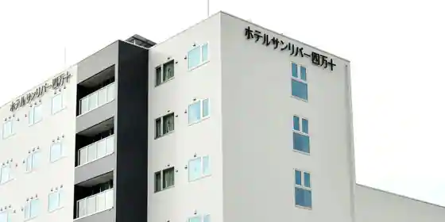
Hotel Sanriba Shimanto
なごみ宿安住庵
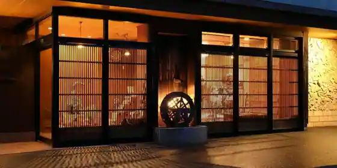
Nagomi Yado Anju Iori
Dining
居酒屋 喜八

Izakaya Kihachi
居酒屋いなか
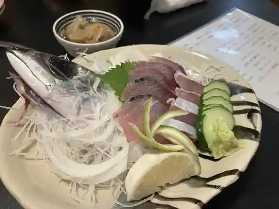
Izakaya Inaka
食酔亭元屋
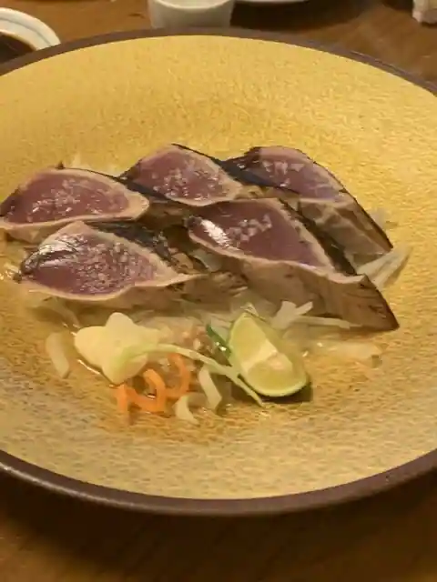
Shoku Sui Tei Moto Ya
味劇場 ちか
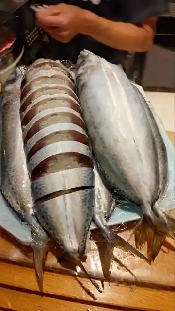
Aji Gekijo Chika
四万十屋
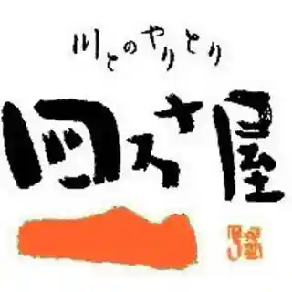
Shimanto Ya
厨房わかまつ
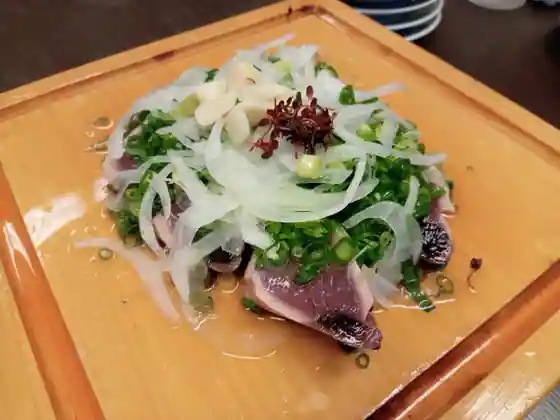
Chubo Wakamatsu
いちもん家
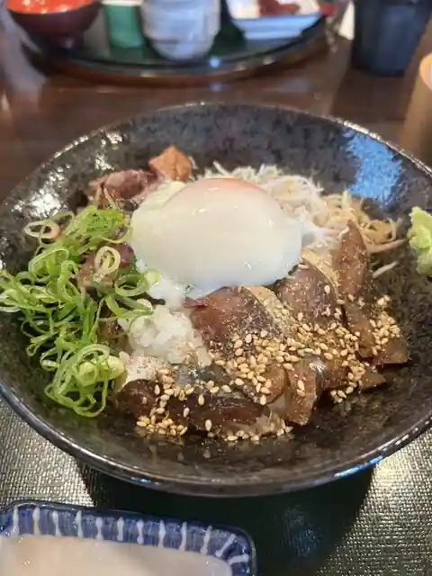
Ichimon Ie
季節料理 たにぐち
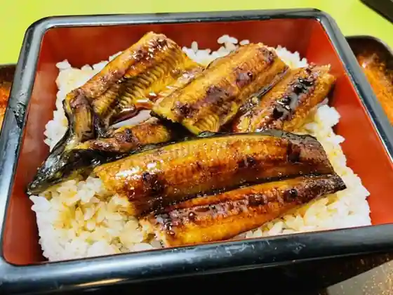
Kisetsu Ryori Taniguchi
居酒屋 なかひら
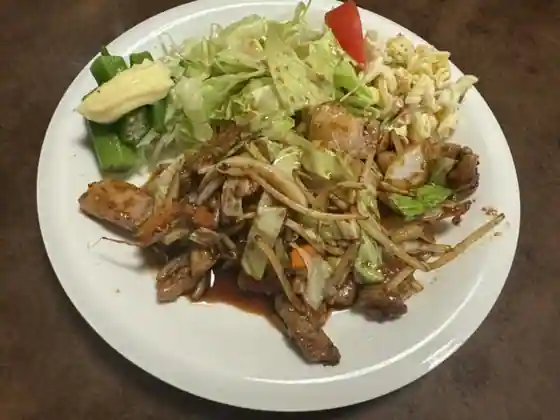
Izakaya Nakahira
うどん工房麦屋
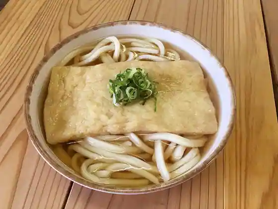
Udon Kobo Mugi Ya
いわき食堂
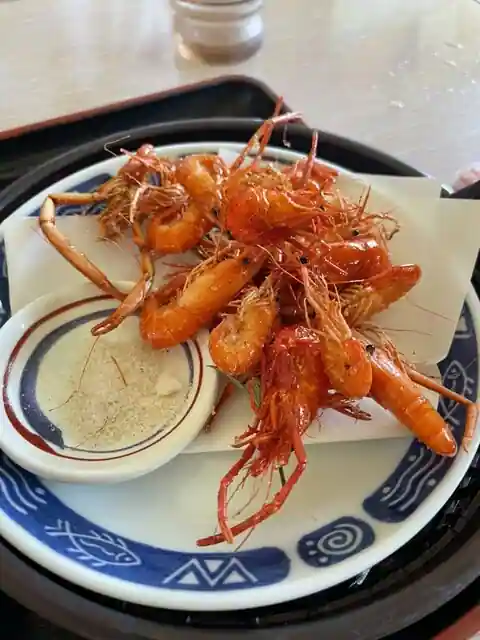
Iwaki Shokudo
ストローベイル・山間屋
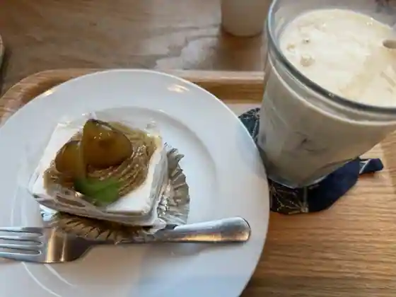
Sutorobeiru Sankan Ya
道の駅 よって西土佐
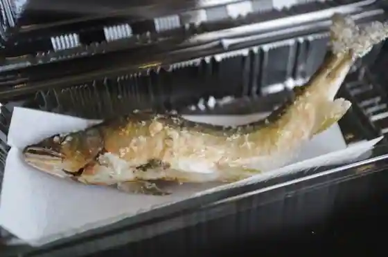
Michi No Eki Yotte Nishitosa
あや食堂
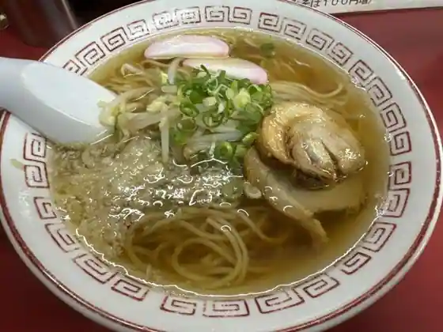
Aya Shokudo
新ロイヤルホテル四万十
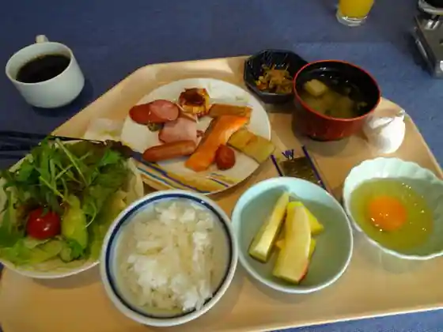
Shin Roiyaru Hotel Shimanto
ピノキオ
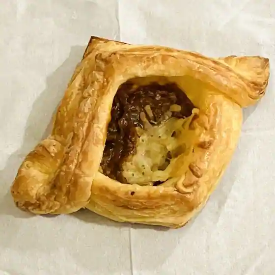
Pinokio
物産館サンリバー四万十
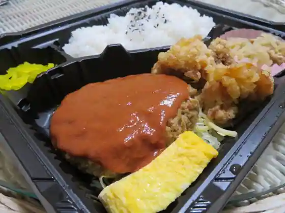
Bussan Kan Sanriba Shimanto
cafe n2
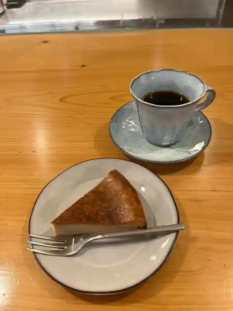
cafe n2
炭や 一風
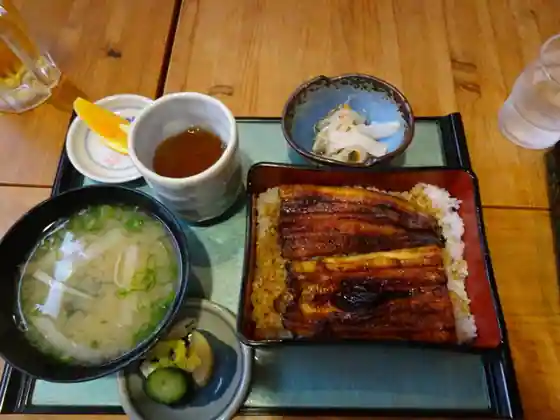
Sumi Ya Ippu
ホテル星羅四万十
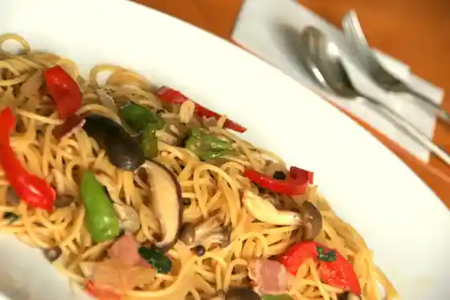
Hotel Seira Shimanto
ぞぅさん亭
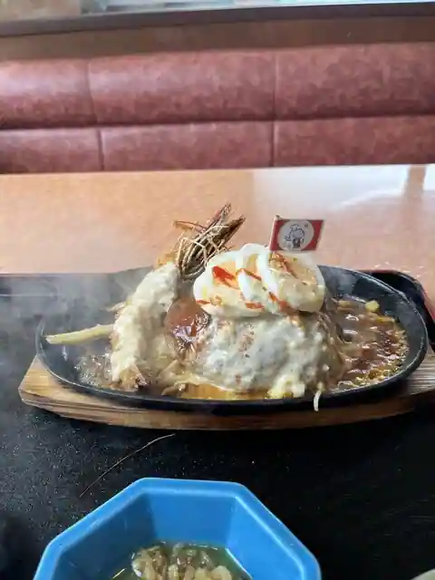
Zosan Tei
タコヤキ 志保ちゃん
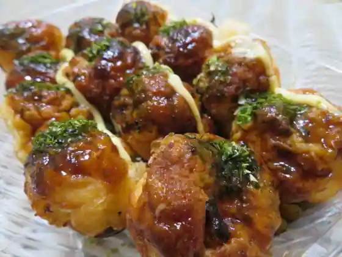
Takoyaki Shiho Chan
居酒屋誠道
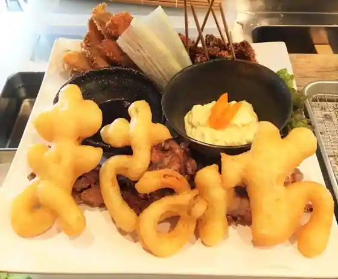
Izakaya Makoto Michi
Sights
Shimanto Kawa Hashi
Iwama Chinkakyo

Sada Chinkakyo
Ichijo Shrine
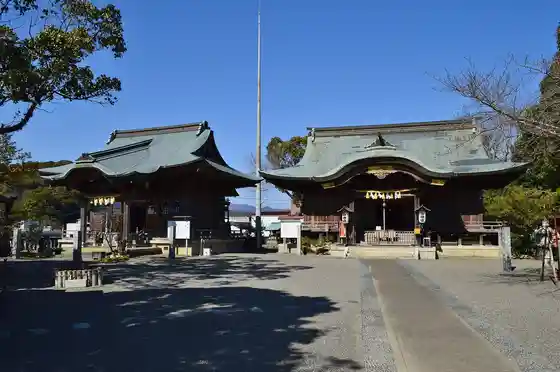
Fuwa Hachiman Shrine
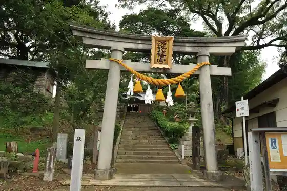
Tombo Nature Park
Chosei Chinkakyo
Ko Tsuga Shrine
Naka Village Castle Ruins
Shimanto Ritsu Local History Museum
Makoto Sei Tera
Taihei Tera
Shimanto Kawa Sakura Zutsumi Park
Tosa Seinandai Kibo Park
Iwami Tera